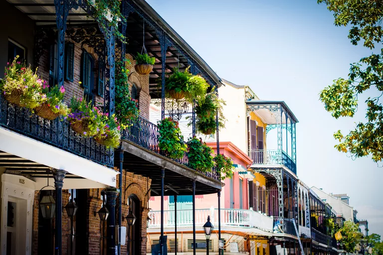

15 Best Place to Travel Destinations in the World
July 23, 2019 | 3 comments
If you’re a timid traveler, you might want to consider one of the 15 countries on our list. Travel and Tourism Competitiveness Report crowned them the safest places in the world based on gathered crime data, including the homicide rate and the reliability of law enforcement services. Not only will you feel safe and secure in these destinations, but you’ll find no shortage of fun things to do and tourist attractions to explore, too! Here are 15 of the safest travel destinations in the world.
Read more
Bali, Indonesia:
You’ll find beaches, volcanoes, Komodo dragons and jungles sheltering elephants, orangutans and tigers. Basically, it’s paradise. It’s likely you’ve seen an image of Bali on social media at least once in the past seven days, as it’s such a popular bucket list destination for 2019.
CONTINUE READING

July 19, 2019 | 3 comments
New Orleans
The lively city known for its street music, festive vibe and a melting pot of French, African and American cultures is well worth the trip. NOLA is a city packed with adventures at every turn and should be on everyone’s must-visit list.
CONTINUE READING

July 12, 2019 | 3 comments
Kerry, Ireland
All the way west in Ireland is one of the country’s most scenic counties. Kerry’s mountains, lakes and coasts are postcard-perfect, and that’s before you add in Killarney National Park. The unique small towns such as Dingle add to its charm.
CONTINUE READING

July 30, 2019 | 3 comments